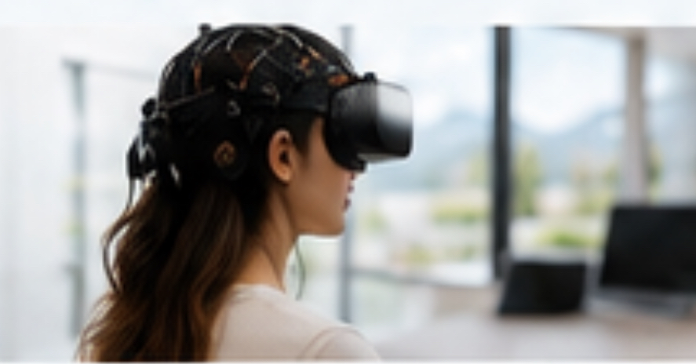

準備中…
--
Museと接続しています

従来：「このくらい窓を大きくした方が開放的だろう」という建築家の経験・直感から決める。
EEGを使う場合：「窓を大きくすると、本当にこの人の開放感や快適性に変化があるのか？」という検証可能な問いになる。
建築では、最終的に美しい・かっこいい・バランスがいい・開放的・ミニマル・素材感がいい、など視覚的・言語的な評価が中心になりやすい。でも実際に人が空間を体験すると、落ち着く・緊張する・情報量が多い・視線が吸い寄せられる・なんとなく居続けたい・なぜか好き・逆に理由は分からないけれど居心地が悪い、ということがある。EEGはこうした体験を直接「読み取る」わけではないが、主観評価と組み合わせることで、設計案の違いに伴う生理的反応を追加の観測情報として扱える。
例えばクライアントに「AとB、どちらが好きですか？」と聞く。「Aです」と答える。「なぜですか？」と聞くと「なんとなく……」となる。そこで終わるのではなく、A/Bをもう一度体験してもらい、EEG + 主観評価から、設計者が「この人は開口を大きくすると『開放的』という評価は上がるけれど、『落ち着く』という評価は下がる」などと見る。すると、「開放感を最大化する」のではなく、「開放感を確保しながら落ち着きも維持する」という設計課題が見えてくる。
従来：建築は、一度つくってしまうと簡単には変えられない。設計段階では、図面・CG・模型などから空間を想像して判断する。
EEGを使う場合：VRやパースなどのデジタル空間を使い、実際に建築をつくる前に、人がその空間をどう感じるかを検証する。
パーソナライズができる。例えば同じ住宅でも、
Person A：大きな窓 → 開放感↑/Comfort↑
Person B：大きな窓 → 開放感↑/Comfort↓
だったら、「大きな窓が良い住宅」という一般論ではなく、このクライアントにとって何が心地よいかを探索できる。
＊EEGが設計するのではなく、EEGによって設計者の問いが変わる。